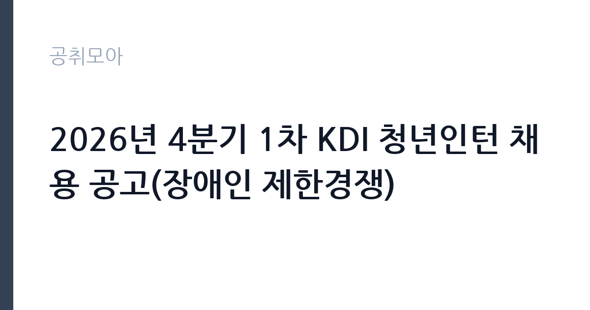

[공공기관] 2026년 4분기 1차 KDI 청년인턴 채용 공고(장애인 제한경쟁)
한국개발연구원 · 세종 · 마감 2026-10-22 (D-12) · 출처 나라일터

한눈에 보는 모집 조건
| 기관 | 한국개발연구원 |
|---|---|
| 공고명 | 2026년 4분기 1차 KDI 청년인턴 채용 공고(장애인 제한경쟁) |
| 고용형태 | 청년인턴(체험형) |
| 근무지 | 세종 |
| 게시일 | 2026-10-08 |
| 마감일 | 2026-10-22 (D-12) |
지원자격, 이렇게 읽으세요
- 인턴 1명
- 접수 ~2026-10-22 마감
- 세부 조건은 원문 공고문 확인
이번 모집의 핵심 응시 자격은 장애인 제한경쟁 요건 충족 여부입니다. 장애인복지법상 등록 장애인에 해당하는지를 먼저 확인하시고, 청년인턴의 연령 기준(공고문 명시 기준일 현재의 연령 상한)을 대조하십시오. 세부 자격과 제출서류, 가점과 우대 조건은 원문 공고문에서 반드시 직접 확인하셔야 합니다. 체험형 인턴은 학력이나 전공에 큰 제한을 두지 않는 경우가 많지만, 이번 모집의 정확한 조건은 원문이 기준입니다. 장애인 제한경쟁 전형에서는 장애인 증명 서류의 발급일자와 유효 여부, 기준일 충족 여부가 서류심사의 첫 관문이 되므로 미리 발급받아 두시는 편이 좋습니다. 접수 마감일인 10월 22일 전에 서류를 완비하십시오.
이 공고의 포인트
KDI는 국무조정실 산하 경제인문사회연구회 소속의 국책연구기관으로, 한국 경제정책의 방향을 제시하는 대표 싱크탱크입니다. 이곳에서의 인턴 경험은 공공기관과 정책 분야로 진로를 정한 청년에게 이력서의 한 줄을 넘어서는 자산이 됩니다. 연구 보조와 자료 조사, 행정 지원을 통해 정책 보고서가 만들어지는 과정을 내부에서 지켜볼 수 있으며, 세종의 국책연구단지라는 입지에서 공공 부문의 인적 네트워크를 넓힐 수 있습니다. 장애인 제한경쟁 전형이라 지원 대상이 한정되어 서류 경쟁의 예측 가능성이 높고, 체험형 인턴 수료 경력은 이후 공공기관 채용에서 실무 경험으로 소구할 수 있습니다. 4분기 채용이라 연내 근무를 시작하는 일정이라는 점도 감안하십시오.
전형은 어떻게 진행되나
전형 방식의 세부 내용은 원문 공고문에서 확인하시기 바랍니다. 공공기관 체험형 청년인턴 채용은 서류전형과 면접전형의 2단계로 진행되는 것이 일반적이며, 서류에서는 자격 충족 여부와 지원동기, 자기소개서를 중심으로 평가합니다. 면접에서는 기본 소양과 조직 적응력, 근무 가능 여부를 확인합니다. 접수 마감일은 10월 22일이므로, 자기소개서를 미리 다듬어 두시는 편이 좋습니다. 장애인 제한경쟁 전형의 특성상 증빙서류 검증이 선행될 수 있으니 장애인 등록 증명 서류를 유효 기간 안에 발급받아 두십시오. 발표 일정과 면접 장소는 원문 공고문과 KDI 채용 안내를 기준으로 챙기시기 바랍니다.
이런 분께 추천해요
- 경제와 사회 정책 분야에 관심이 있고 국책연구기관의 실무를 경험하고 싶은 청년에게 적합합니다.
- 공공기관 취업을 준비하면서 체험형 인턴 경력을 이력서에 더하고 싶은 장애인 등록 청년께 잘 맞는 자리입니다.
- 세종 근무가 가능하고 4분기부터 성실히 근무할 수 있는 분, 연구 지원과 행정 보조 업무에 적응할 수 있는 분께 권합니다.
지원 전 체크리스트
- 원문 공고문에서 장애인 제한경쟁 응시 자격과 연령 기준일, 제출서류를 빠짐없이 확인하십시오.
- 장애인 등록 증명 서류를 유효 기간 안에 발급받아 접수 서류에 포함하십시오.
- 지원동기와 자기소개서에 KDI와 정책 연구에 대한 관심을 구체적으로 담아 미리 준비하십시오.
- 접수 마감일인 10월 22일과 근무 예정 기간, 근무 부서를 확인한 뒤 지원 여부를 결정하십시오.
모집 일정과 제출 타이밍
접수 마감일은 2026년 10월 22일입니다. 4분기 1차 모집이라는 명칭으로 미루어 연내 근무 시작이 예정되어 있을 가능성이 크므로, 합격 후 일정까지 염두에 두고 지원하십시오. 서류전형 합격자 발표와 면접전형, 최종합격자 발표 일정은 원문 공고문에 안내된 바를 따르시면 됩니다. 자기소개서 작성과 증빙서류 발급에 며칠이 걸릴 수 있으니 마감일 직전이 아니라 최소 2~3일 전에는 접수를 마치시는 편이 안전합니다.
직무 이해하기: 공공기관
체험형 청년인턴은 연구와 행정 부서에 배치되어 실무를 보조하는 역할을 맡습니다. 연구 부서에서는 문헌과 통계자료 조사, 데이터 정리, 세미나 준비 같은 업무를, 행정 부서에서는 문서 작성과 민원 응대 보조, 행사 지원 같은 업무를 맡게 됩니다. KDI의 주력 분야인 거시경제와 재정, 노동, 산업, 규제 정책 연구가 어떻게 수행되는지를 곁에서 배우는 기회가 되며, 보고서 작성과 자료 정리 같은 기본기를 단련할 수 있습니다. 배치 부서에 따라 업무 내용이 달라지므로 배정 이후 담당자와 역할을 분명히 하고 성실히 수행하는 태도가 중요합니다.
자기소개서 작성 팁
자기소개서에는 KDI라는 특정 기관을 택한 이유를 구체적으로 적으시는 편이 좋습니다. 경제와 사회 현안 가운데 본인이 관심을 가진 주제를 하나 정하고, 그 주제와 KDI 연구를 연결지어 서술하십시오. 자료 조사나 통계 정리, 문서 작성 같은 실무 능력을 보여줄 수 있는 경험을 사례로 들어주십시오. 장애인 제한경쟁 전형이라는 점을 의식해 본인의 강점과 근무 의지를 당당하게 드러내시고, 인턴 기간에 배우고 기여할 계획을 분명히 적으시면 좋은 평가를 기대할 수 있습니다. 분량은 공고문의 작성 기준을 따르고 오탈자를 꼼꼼히 검토하십시오.
면접 준비 포인트
면접에서는 기본 소양과 조직 적응력, 근무 의지를 주로 확인합니다. KDI가 어떤 기관인지, 최근 발표한 경제전망이나 연구 가운데 인상 깊었던 내용을 하나 준비해 가시면 성의 있는 지원자로 기억되실 수 있습니다. 출근 가능 시기와 성실한 근무 태도를 묻는 질문에는 명확하게 답변하시고, 배치 부서가 어디가 되더라도 적응하겠다는 유연함을 보여주시는 편이 좋습니다. 면접 복장은 단정하게 갖추시고, 질문의 의도를 파악한 뒤 또렷하게 답변하는 연습을 해 두십시오.
급여·근무조건 읽는 법
보수 조건은 원문 공고문에서 확인하시기 바랍니다. 공공기관 체험형 청년인턴의 보수는 월 단위 수당으로 지급되는 것이 일반적이며, 세전 금액과 4대 보험 적용 여부, 주휴수당과 연차수당 포함 여부가 공고문에 안내됩니다. 원문에 구체적인 금액이 제시되어 있지 않다면 임의로 추측하지 마시고, KDI 채용 담당 부서에 문의하시는 편이 정확합니다. 세종 근무 예정자께서는 통근과 주거 여건도 함께 따져보시기 바랍니다.
자주 묻는 질문
- 장애인 제한경쟁이라는 것은 무슨 의미인가요?
장애인 등록자를 대상으로만 선발하는 전형입니다. 비장애인은 지원하실 수 없으며, 장애인 등록 증명 서류로 자격을 확인합니다. 세부 기준은 원문 공고문을 기준으로 판단하십시오. - 체험형 청년인턴은 어떤 제도인가요?
공공기관 취업을 준비하는 청년에게 실무 경험을 제공하기 위한 단기 인턴 제도입니다. 정규직 전환이 보장되는 것은 아니지만, 공공 부문 실무 경력과 수료 경력을 쌓을 수 있습니다. - 근무지는 어디인가요?
세종특별자치시에 위치한 한국개발연구원입니다. 배치 부서에 따라 세부 업무가 달라지며, 근무 기간과 부서는 원문 공고문에서 확인하시기 바랍니다.
함께 보면 좋은 공고
[공공기관] 2026년 제9회 동두천시 시설관리공단 기간제 근로자 채용 공고 — 마감 2026-10-14[공공기관] [설악산] 설악산국립공원 기간제 직원[탐방해설] 채용 추가접수 공고 — 마감 2026-10-16[공공기관] 2026년 4분기 1차 KDI 청년인턴 채용 공고 — 마감 2026-10-22출처: 나라일터 공개정보를 바탕으로 공취모아가 정리한 안내글입니다. 모집 조건·일정은 변경될 수 있으니 지원 전 반드시 원문 공고문을 확인하세요. 본 글은 정보 제공용이며 합격을 보장하지 않습니다.